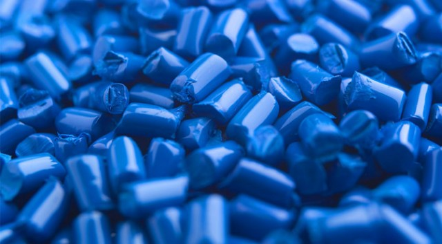
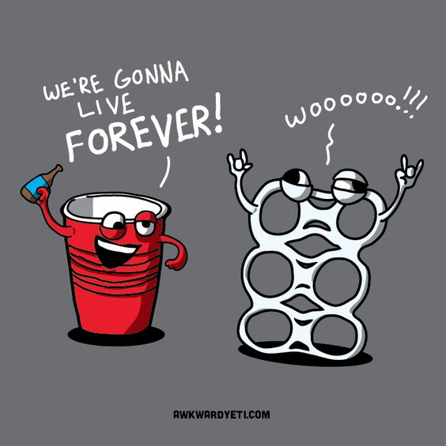

Plastic
Handle with care, plastic is everywhere
A commentary by Ben & Vikas
Introduction
What are Plastics?

-
Synthetic goodness made from organic compounds
- Derived from petrochemicals
- Some are fully organic
-
Used in daily life
- Cars (~20%)
- Electronics (aesthetics / internal components)
- Toys (for kids) (... and adults)
-
Yuge industry
- $373 billion / year in production
- Intermediary product
Case Study
The Humble Water Bottle
- Water Bottles are made of Polyethylene Terephthalate (PET)
-
Advantages
- Durable & Resistant to variety of conditions (heat, cold, wear, abrasion, chemicals)
- Can come in a variety of colors
- Recyclable
- Supporters: Recycling companies, people who live in bad cities
-
Disadvanges
- Shouldn’t be used multiple times
- Not biodegradable
- Recyclable
- Monomers leftover (queue next slide)
- Supporters:[educated] environmentalists, reusable bottle companies
